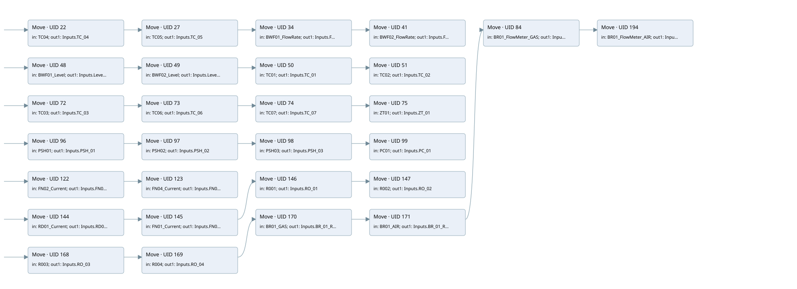

analog
hmi inputs · 검색 색인 순서 2 · 원본 내부 NID 추정 2
백업 PLF 원본의 2984584 바이트 위치에서 복원한 XML. 검색 문서 1071의 객체 키 16102200ea16000000000000와 연결했다. 이름 해석 56/56개. 남은 RefId는 상수 또는 미해석 참조다.
연결 구조 다시 그리기
원본 Part/PCon/Wire를 이용한 연결도다. TIA 화면의 래더 배치 또는 실행 결과를 재현한 그림은 아니다. 핀 연결은 아래 표와 원본 XML을 기준으로 읽는다. 노드 위에 마우스를 두면 피연산자 이름을 볼 수 있다.

접점·코일·블록과 피연산자
| Part UID | Gate | Negated 핀 | 연결 피연산자 |
|---|---|---|---|
| 22 | Move | in = TC04; out1 = Inputs.TC_04 | |
| 27 | Move | in = TC05; out1 = Inputs.TC_05 | |
| 34 | Move | in = BWF01_FlowRate; out1 = Inputs.Flow_rate_BWF01 | |
| 41 | Move | in = BWF02_FlowRate; out1 = Inputs.Flow_rate_BWF02 | |
| 48 | Move | in = BWF01_Level; out1 = Inputs.Level_BWF01 | |
| 49 | Move | in = BWF02_Level; out1 = Inputs.Level_BWF02 | |
| 50 | Move | in = TC01; out1 = Inputs.TC_01 | |
| 51 | Move | in = TC02; out1 = Inputs.TC_02 | |
| 72 | Move | in = TC03; out1 = Inputs.TC_03 | |
| 73 | Move | in = TC06; out1 = Inputs.TC_06 | |
| 74 | Move | in = TC07; out1 = Inputs.TC_07 | |
| 75 | Move | in = ZT01; out1 = Inputs.ZT_01 | |
| 96 | Move | in = PSH01; out1 = Inputs.PSH_01 | |
| 97 | Move | in = PSH02; out1 = Inputs.PSH_02 | |
| 98 | Move | in = PSH03; out1 = Inputs.PSH_03 | |
| 99 | Move | in = PC01; out1 = Inputs.PC_01 | |
| 122 | Move | in = FN02_Current; out1 = Inputs.FN02_ABSORPTION | |
| 123 | Move | in = FN04_Current; out1 = Inputs.FN04_ABSORPTION | |
| 144 | Move | in = RD01_Current; out1 = Inputs.RD01_ABSORBPTION | |
| 145 | Move | in = FN01_Current; out1 = Inputs.FN01_ABSORPTION | |
| 146 | Move | in = R001; out1 = Inputs.RO_01 | |
| 147 | Move | in = R002; out1 = Inputs.RO_02 | |
| 168 | Move | in = R003; out1 = Inputs.RO_03 | |
| 169 | Move | in = R004; out1 = Inputs.RO_04 | |
| 170 | Move | in = BR01_GAS; out1 = Inputs.BR_01_RETRANSMISSION_GAS | |
| 171 | Move | in = BR01_AIR; out1 = Inputs.BR_01_RETRANSMISSION_AIR | |
| 84 | Move | in = BR01_FlowMeter_GAS; out1 = Inputs.BR_01_MASSFLOWMETER_GAS | |
| 194 | Move | in = BR01_FlowMeter_AIR; out1 = Inputs.BR_01_MASSFLOWMETER_AIR |
접점 경로를 펼친 조건식
Contact·O/A·비교기의 원본 연결을 읽기 쉽게 펼친 보조 해석이다. POWER는 전원 레일 시작을 뜻한다. 호출 블록·에지·타이머의 내부 동작과 다중 쓰기 순서는 이 표로 실행 검증하지 않았다. 미해석 핀과 RefId는 원문 연결표에서 확인한다.
| UID | 동작 | 대상 | 원본 접점 경로 | 내용 |
|---|---|---|---|---|
| 22 | Move | Inputs.TC_04 | POWER | Move 입력 TC04 |
| 27 | Move | Inputs.TC_05 | Move UID 22.eno (블록 동작 확인) | Move 입력 TC05 |
| 34 | Move | Inputs.Flow_rate_BWF01 | Move UID 27.eno (블록 동작 확인) | Move 입력 BWF01_FlowRate |
| 41 | Move | Inputs.Flow_rate_BWF02 | Move UID 34.eno (블록 동작 확인) | Move 입력 BWF02_FlowRate |
| 48 | Move | Inputs.Level_BWF01 | POWER | Move 입력 BWF01_Level |
| 49 | Move | Inputs.Level_BWF02 | Move UID 48.eno (블록 동작 확인) | Move 입력 BWF02_Level |
| 50 | Move | Inputs.TC_01 | Move UID 49.eno (블록 동작 확인) | Move 입력 TC01 |
| 51 | Move | Inputs.TC_02 | Move UID 50.eno (블록 동작 확인) | Move 입력 TC02 |
| 72 | Move | Inputs.TC_03 | POWER | Move 입력 TC03 |
| 73 | Move | Inputs.TC_06 | Move UID 72.eno (블록 동작 확인) | Move 입력 TC06 |
| 74 | Move | Inputs.TC_07 | Move UID 73.eno (블록 동작 확인) | Move 입력 TC07 |
| 75 | Move | Inputs.ZT_01 | Move UID 74.eno (블록 동작 확인) | Move 입력 ZT01 |
| 96 | Move | Inputs.PSH_01 | POWER | Move 입력 PSH01 |
| 97 | Move | Inputs.PSH_02 | Move UID 96.eno (블록 동작 확인) | Move 입력 PSH02 |
| 98 | Move | Inputs.PSH_03 | Move UID 97.eno (블록 동작 확인) | Move 입력 PSH03 |
| 99 | Move | Inputs.PC_01 | Move UID 98.eno (블록 동작 확인) | Move 입력 PC01 |
| 122 | Move | Inputs.FN02_ABSORPTION | POWER | Move 입력 FN02_Current |
| 123 | Move | Inputs.FN04_ABSORPTION | Move UID 122.eno (블록 동작 확인) | Move 입력 FN04_Current |
| 144 | Move | Inputs.RD01_ABSORBPTION | POWER | Move 입력 RD01_Current |
| 145 | Move | Inputs.FN01_ABSORPTION | Move UID 144.eno (블록 동작 확인) | Move 입력 FN01_Current |
| 146 | Move | Inputs.RO_01 | Move UID 145.eno (블록 동작 확인) | Move 입력 R001 |
| 147 | Move | Inputs.RO_02 | Move UID 146.eno (블록 동작 확인) | Move 입력 R002 |
| 168 | Move | Inputs.RO_03 | POWER | Move 입력 R003 |
| 169 | Move | Inputs.RO_04 | Move UID 168.eno (블록 동작 확인) | Move 입력 R004 |
| 170 | Move | Inputs.BR_01_RETRANSMISSION_GAS | Move UID 169.eno (블록 동작 확인) | Move 입력 BR01_GAS |
| 171 | Move | Inputs.BR_01_RETRANSMISSION_AIR | Move UID 170.eno (블록 동작 확인) | Move 입력 BR01_AIR |
| 84 | Move | Inputs.BR_01_MASSFLOWMETER_GAS | Move UID 171.eno (블록 동작 확인) | Move 입력 BR01_FlowMeter_GAS |
| 194 | Move | Inputs.BR_01_MASSFLOWMETER_AIR | Move UID 84.eno (블록 동작 확인) | Move 입력 BR01_FlowMeter_AIR |
원본 배선 연결
| Wire UID | 동일 Wire 연결 끝점 |
|---|---|
| 21 | Powerrail {} ↔ Part 22.en ↔ Part 48.en ↔ Part 72.en ↔ Part 96.en ↔ Part 122.en ↔ Part 144.en ↔ Part 168.en |
| 23 | ORef 25 (TC04) ↔ Part 22.in |
| 33 | Part 22.eno ↔ Part 27.en |
| 24 | Part 22.out1 ↔ ORef 26 (Inputs.TC_04) |
| 31 | ORef 28 (TC05) ↔ Part 27.in |
| 40 | Part 27.eno ↔ Part 34.en |
| 32 | Part 27.out1 ↔ ORef 29 (Inputs.TC_05) |
| 38 | ORef 35 (BWF01_FlowRate) ↔ Part 34.in |
| 47 | Part 34.eno ↔ Part 41.en |
| 39 | Part 34.out1 ↔ ORef 36 (Inputs.Flow_rate_BWF01) |
| 45 | ORef 42 (BWF02_FlowRate) ↔ Part 41.in |
| 46 | Part 41.out1 ↔ ORef 43 (Inputs.Flow_rate_BWF02) |
| 61 | ORef 52 (BWF01_Level) ↔ Part 48.in |
| 62 | Part 48.eno ↔ Part 49.en |
| 63 | Part 48.out1 ↔ ORef 53 (Inputs.Level_BWF01) |
| 64 | ORef 54 (BWF02_Level) ↔ Part 49.in |
| 65 | Part 49.eno ↔ Part 50.en |
| 66 | Part 49.out1 ↔ ORef 55 (Inputs.Level_BWF02) |
| 67 | ORef 56 (TC01) ↔ Part 50.in |
| 68 | Part 50.eno ↔ Part 51.en |
| 69 | Part 50.out1 ↔ ORef 57 (Inputs.TC_01) |
| 70 | ORef 58 (TC02) ↔ Part 51.in |
| 71 | Part 51.out1 ↔ ORef 59 (Inputs.TC_02) |
| 85 | ORef 76 (TC03) ↔ Part 72.in |
| 86 | Part 72.eno ↔ Part 73.en |
| 87 | Part 72.out1 ↔ ORef 77 (Inputs.TC_03) |
| 88 | ORef 78 (TC06) ↔ Part 73.in |
| 89 | Part 73.eno ↔ Part 74.en |
| 90 | Part 73.out1 ↔ ORef 79 (Inputs.TC_06) |
| 91 | ORef 80 (TC07) ↔ Part 74.in |
| 92 | Part 74.eno ↔ Part 75.en |
| 93 | Part 74.out1 ↔ ORef 81 (Inputs.TC_07) |
| 94 | ORef 82 (ZT01) ↔ Part 75.in |
| 95 | Part 75.out1 ↔ ORef 83 (Inputs.ZT_01) |
| 109 | ORef 100 (PSH01) ↔ Part 96.in |
| 110 | Part 96.eno ↔ Part 97.en |
| 111 | Part 96.out1 ↔ ORef 101 (Inputs.PSH_01) |
| 112 | ORef 102 (PSH02) ↔ Part 97.in |
| 113 | Part 97.eno ↔ Part 98.en |
| 114 | Part 97.out1 ↔ ORef 103 (Inputs.PSH_02) |
| 115 | ORef 104 (PSH03) ↔ Part 98.in |
| 116 | Part 98.eno ↔ Part 99.en |
| 117 | Part 98.out1 ↔ ORef 105 (Inputs.PSH_03) |
| 118 | ORef 106 (PC01) ↔ Part 99.in |
| 119 | Part 99.out1 ↔ ORef 107 (Inputs.PC_01) |
| 139 | ORef 128 (FN02_Current) ↔ Part 122.in |
| 140 | Part 122.eno ↔ Part 123.en |
| 141 | Part 122.out1 ↔ ORef 129 (Inputs.FN02_ABSORPTION) |
| 142 | ORef 130 (FN04_Current) ↔ Part 123.in |
| 143 | Part 123.out1 ↔ ORef 131 (Inputs.FN04_ABSORPTION) |
| 157 | ORef 148 (RD01_Current) ↔ Part 144.in |
| 158 | Part 144.eno ↔ Part 145.en |
| 159 | Part 144.out1 ↔ ORef 149 (Inputs.RD01_ABSORBPTION) |
| 160 | ORef 150 (FN01_Current) ↔ Part 145.in |
| 161 | Part 145.eno ↔ Part 146.en |
| 162 | Part 145.out1 ↔ ORef 151 (Inputs.FN01_ABSORPTION) |
| 163 | ORef 152 (R001) ↔ Part 146.in |
| 164 | Part 146.eno ↔ Part 147.en |
| 165 | Part 146.out1 ↔ ORef 153 (Inputs.RO_01) |
| 166 | ORef 154 (R002) ↔ Part 147.in |
| 167 | Part 147.out1 ↔ ORef 155 (Inputs.RO_02) |
| 181 | ORef 172 (R003) ↔ Part 168.in |
| 182 | Part 168.eno ↔ Part 169.en |
| 183 | Part 168.out1 ↔ ORef 173 (Inputs.RO_03) |
| 184 | ORef 174 (R004) ↔ Part 169.in |
| 185 | Part 169.eno ↔ Part 170.en |
| 186 | Part 169.out1 ↔ ORef 175 (Inputs.RO_04) |
| 187 | ORef 176 (BR01_GAS) ↔ Part 170.in |
| 188 | Part 170.eno ↔ Part 171.en |
| 189 | Part 170.out1 ↔ ORef 177 (Inputs.BR_01_RETRANSMISSION_GAS) |
| 190 | ORef 178 (BR01_AIR) ↔ Part 171.in |
| 108 | Part 171.eno ↔ Part 84.en |
| 191 | Part 171.out1 ↔ ORef 179 (Inputs.BR_01_RETRANSMISSION_AIR) |
| 132 | ORef 180 (BR01_FlowMeter_GAS) ↔ Part 84.in |
| 195 | Part 84.eno ↔ Part 194.en |
| 156 | Part 84.out1 ↔ ORef 192 (Inputs.BR_01_MASSFLOWMETER_GAS) |
| 196 | ORef 198 (BR01_FlowMeter_AIR) ↔ Part 194.in |
| 197 | Part 194.out1 ↔ ORef 199 (Inputs.BR_01_MASSFLOWMETER_AIR) |
식별자 해석 근거 56개
| ORef UID | RefId | 이름 | IdentXmlPart 파일 | 해석 방법 |
|---|---|---|---|---|
| 25 | 156 | TC04 | 0627-IdentXmlPart.xml | UID/RID + search-text + NID agreement |
| 26 | 157 | Inputs.TC_04 | 0629-IdentXmlPart.xml | UID/RID + search-text + NID agreement |
| 28 | 158 | TC05 | 0627-IdentXmlPart.xml | UID/RID + search-text + NID agreement |
| 29 | 159 | Inputs.TC_05 | 0629-IdentXmlPart.xml | UID/RID + search-text + NID agreement |
| 35 | 46 | BWF01_FlowRate | 0627-IdentXmlPart.xml | UID/RID + search-text + NID agreement |
| 36 | 52 | Inputs.Flow_rate_BWF01 | 0629-IdentXmlPart.xml | UID/RID + search-text + NID agreement |
| 42 | 53 | BWF02_FlowRate | 0627-IdentXmlPart.xml | UID/RID + search-text + NID agreement |
| 43 | 54 | Inputs.Flow_rate_BWF02 | 0629-IdentXmlPart.xml | UID/RID + search-text + NID agreement |
| 52 | 55 | BWF01_Level | 0627-IdentXmlPart.xml | UID/RID + search-text + NID agreement |
| 53 | 57 | Inputs.Level_BWF01 | 0629-IdentXmlPart.xml | UID/RID + search-text + NID agreement |
| 54 | 58 | BWF02_Level | 0627-IdentXmlPart.xml | UID/RID + search-text + NID agreement |
| 55 | 60 | Inputs.Level_BWF02 | 0629-IdentXmlPart.xml | UID/RID + search-text + NID agreement |
| 56 | 61 | TC01 | 0627-IdentXmlPart.xml | UID/RID + search-text + NID agreement |
| 57 | 64 | Inputs.TC_01 | 0629-IdentXmlPart.xml | UID/RID + search-text + NID agreement |
| 58 | 62 | TC02 | 0627-IdentXmlPart.xml | UID/RID + search-text + NID agreement |
| 59 | 66 | Inputs.TC_02 | 0629-IdentXmlPart.xml | UID/RID + search-text + NID agreement |
| 76 | 67 | TC03 | 0627-IdentXmlPart.xml | UID/RID + search-text + NID agreement |
| 77 | 69 | Inputs.TC_03 | 0629-IdentXmlPart.xml | UID/RID + search-text + NID agreement |
| 78 | 70 | TC06 | 0627-IdentXmlPart.xml | UID/RID + search-text + NID agreement |
| 79 | 72 | Inputs.TC_06 | 0629-IdentXmlPart.xml | UID/RID + search-text + NID agreement |
| 80 | 73 | TC07 | 0627-IdentXmlPart.xml | UID/RID + search-text + NID agreement |
| 81 | 75 | Inputs.TC_07 | 0629-IdentXmlPart.xml | UID/RID + search-text + NID agreement |
| 82 | 76 | ZT01 | 0627-IdentXmlPart.xml | UID/RID + search-text + NID agreement |
| 83 | 78 | Inputs.ZT_01 | 0629-IdentXmlPart.xml | UID/RID + search-text + NID agreement |
| 100 | 79 | PSH01 | 0627-IdentXmlPart.xml | UID/RID + search-text + NID agreement |
| 101 | 81 | Inputs.PSH_01 | 0629-IdentXmlPart.xml | UID/RID + search-text + NID agreement |
| 102 | 82 | PSH02 | 0627-IdentXmlPart.xml | UID/RID + search-text + NID agreement |
| 103 | 84 | Inputs.PSH_02 | 0629-IdentXmlPart.xml | UID/RID + search-text + NID agreement |
| 104 | 88 | PSH03 | 0627-IdentXmlPart.xml | UID/RID + search-text + NID agreement |
| 105 | 89 | Inputs.PSH_03 | 0629-IdentXmlPart.xml | UID/RID + search-text + NID agreement |
| 106 | 90 | PC01 | 0627-IdentXmlPart.xml | UID/RID + search-text + NID agreement |
| 107 | 92 | Inputs.PC_01 | 0629-IdentXmlPart.xml | UID/RID + search-text + NID agreement |
| 128 | 99 | FN02_Current | 0627-IdentXmlPart.xml | UID/RID + search-text + NID agreement |
| 129 | 101 | Inputs.FN02_ABSORPTION | 0629-IdentXmlPart.xml | UID/RID + search-text + NID agreement |
| 130 | 137 | FN04_Current | 0627-IdentXmlPart.xml | UID/RID + search-text + NID agreement |
| 131 | 138 | Inputs.FN04_ABSORPTION | 0629-IdentXmlPart.xml | UID/RID + search-text + NID agreement |
| 148 | 105 | RD01_Current | 0627-IdentXmlPart.xml | UID/RID + search-text + NID agreement |
| 149 | 107 | Inputs.RD01_ABSORBPTION | 0629-IdentXmlPart.xml | UID/RID + search-text + NID agreement |
| 150 | 108 | FN01_Current | 0627-IdentXmlPart.xml | UID/RID + search-text + NID agreement |
| 151 | 110 | Inputs.FN01_ABSORPTION | 0629-IdentXmlPart.xml | UID/RID + search-text + NID agreement |
| 152 | 111 | R001 | 0627-IdentXmlPart.xml | UID/RID + search-text + NID agreement |
| 153 | 113 | Inputs.RO_01 | 0629-IdentXmlPart.xml | UID/RID + search-text + NID agreement |
| 154 | 117 | R002 | 0627-IdentXmlPart.xml | UID/RID + search-text + NID agreement |
| 155 | 118 | Inputs.RO_02 | 0629-IdentXmlPart.xml | UID/RID + search-text + NID agreement |
| 172 | 119 | R003 | 0627-IdentXmlPart.xml | UID/RID + search-text + NID agreement |
| 173 | 121 | Inputs.RO_03 | 0629-IdentXmlPart.xml | UID/RID + search-text + NID agreement |
| 174 | 122 | R004 | 0627-IdentXmlPart.xml | UID/RID + search-text + NID agreement |
| 175 | 124 | Inputs.RO_04 | 0629-IdentXmlPart.xml | UID/RID + search-text + NID agreement |
| 176 | 125 | BR01_GAS | 0627-IdentXmlPart.xml | UID/RID + search-text + NID agreement |
| 177 | 127 | Inputs.BR_01_RETRANSMISSION_GAS | 0629-IdentXmlPart.xml | UID/RID + search-text + NID agreement |
| 178 | 128 | BR01_AIR | 0627-IdentXmlPart.xml | UID/RID + search-text + NID agreement |
| 179 | 130 | Inputs.BR_01_RETRANSMISSION_AIR | 0629-IdentXmlPart.xml | UID/RID + search-text + NID agreement |
| 180 | 131 | BR01_FlowMeter_GAS | 0627-IdentXmlPart.xml | UID/RID + search-text + NID agreement |
| 192 | 133 | Inputs.BR_01_MASSFLOWMETER_GAS | 0629-IdentXmlPart.xml | UID/RID + search-text + NID agreement |
| 198 | 134 | BR01_FlowMeter_AIR | 0627-IdentXmlPart.xml | UID/RID + search-text + NID agreement |
| 199 | 136 | Inputs.BR_01_MASSFLOWMETER_AIR | 0629-IdentXmlPart.xml | UID/RID + search-text + NID agreement |
검색 코드 보조 자료
참조 명칭을 찾기 위한 자료이며 실행 순서나 AND/OR 관계는 위 연결표로 확인한다.
move "tc04" move "tc05" move "bwf01_flowrate":p move "bwf02_flowrate" move "bwf01_level" move "bwf02_level" move "tc01" move "tc02" "inputs".level_bwf01 "inputs".level_bwf02 "inputs".tc_01 "inputs".tc_02 move "tc03" move "tc06" move "tc07" move "zt01" "inputs".tc_03 "inputs".tc_06 "inputs".tc_07 "inputs".zt_01 move "psh01" move "psh02" move "psh03" move "pc01" "inputs".psh_01 "inputs".psh_02 "inputs".psh_03 "inputs".pc_01 move "fn02_current" move "fn04_current" "inputs".fn02_absorption "inputs".fn04_absorption move "rd01_current" move "fn01_current" move "r001" move "r002" "inputs".rd01_absorbption "inputs".fn01_absorption "inputs".ro_01 "inputs".ro_02 move "r003" move "r004" move "br01_gas" move "br01_air" move "br01_flowmeter_gas" move "br01_flowmeter_air" "inputs".ro_03 "inputs".ro_04 "inputs".br_01_retransmission_gas "inputs".br_01_retransmission_air "inputs".br_01_massflowmeter_gas "inputs".br_01_massflowmeter_air "inputs".tc_04 "inputs".tc_05 "inputs".flow_rate_bwf01 "inputs".flow_rate_bwf02